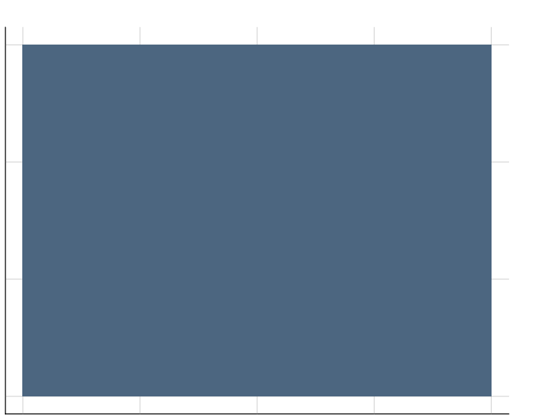
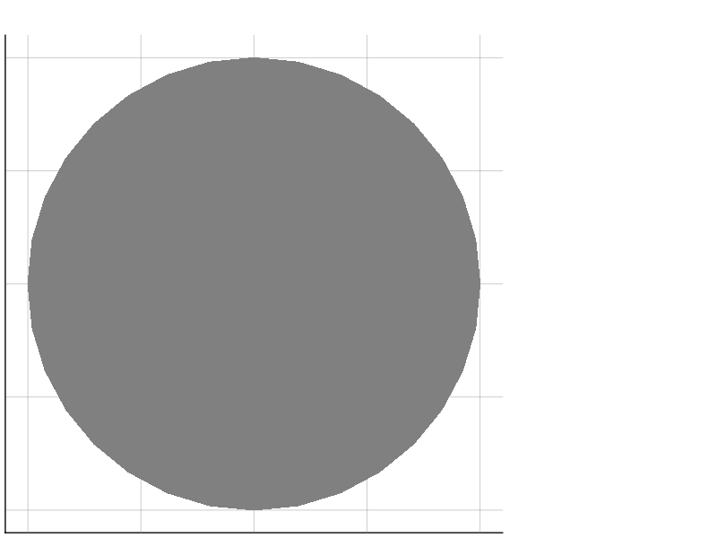
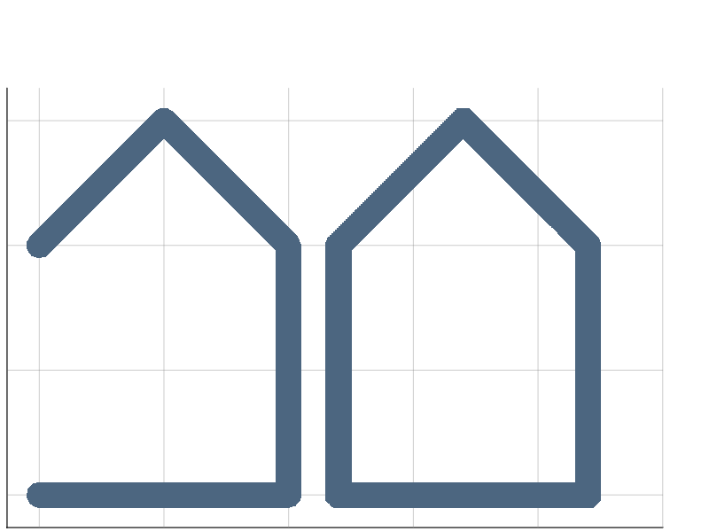
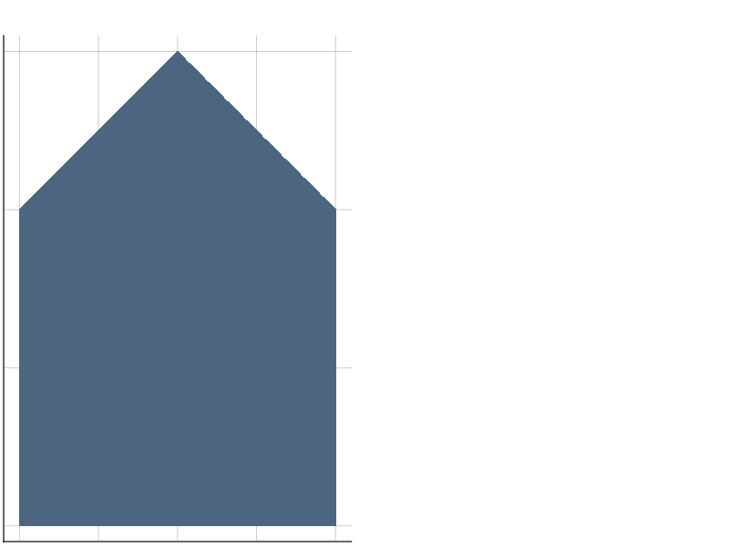
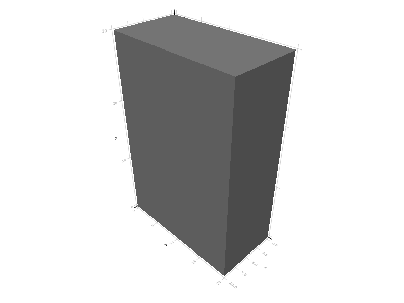
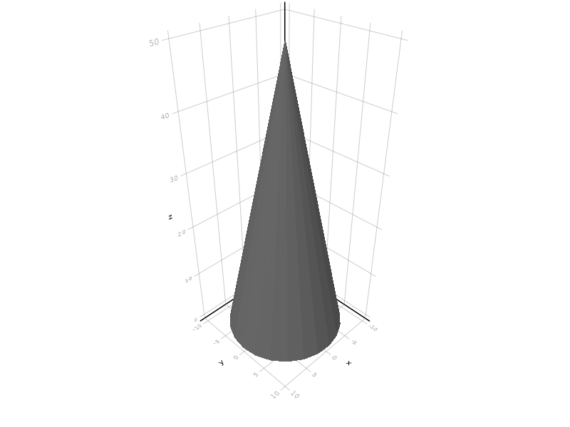
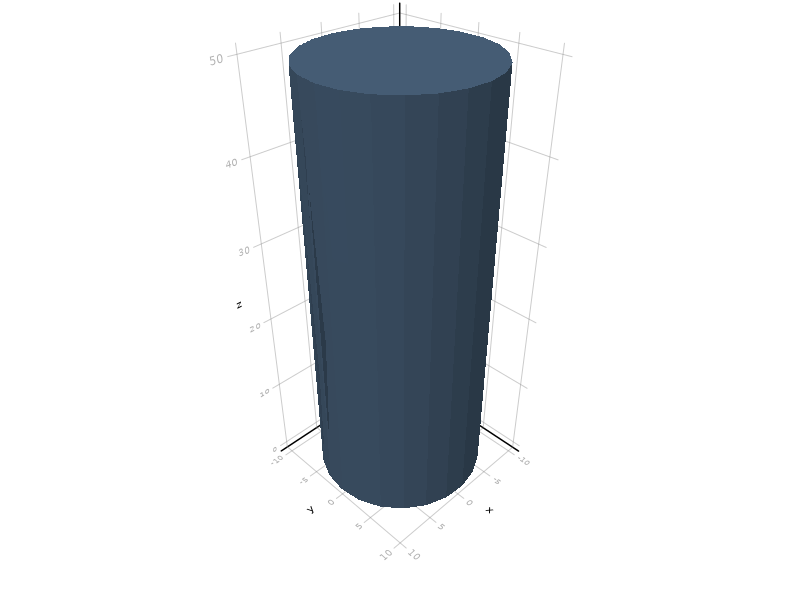
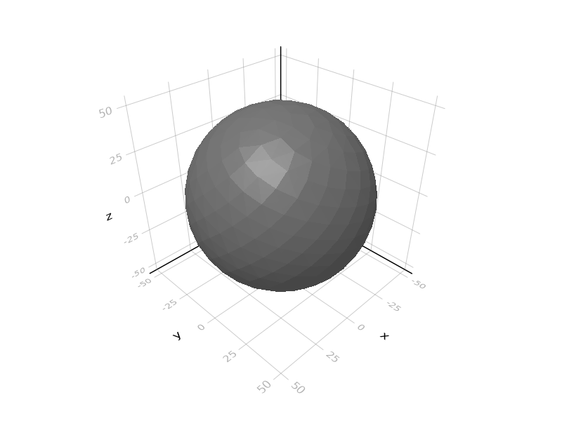
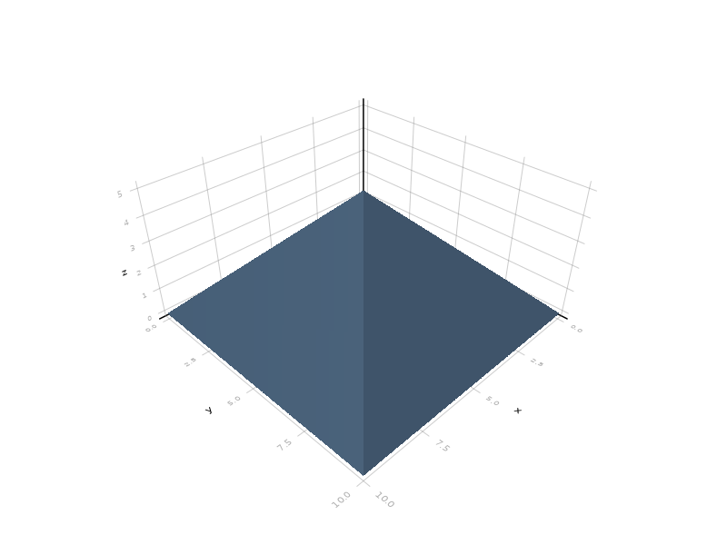

Primitive solids
ConstructiveGeometry.jl supports two basic families of objects: two-dimensional shapes and three-dimensional volumes.
Two-dimensional shapes
Square
ConstructiveGeometry.square — Functionsquare(size; origin, center=false)
square(width, height; origin, center=false)An axis-parallel square or rectangle with given size (scalar or vector of length 2).
julia> s = square(20,15); square([20,15]) also works; square(20) produces a real square.
Circle
ConstructiveGeometry.circle — Functioncircle(r::Real, [circumscribed = false])A circle with diameter r, centered at the origin.
The corresponding mesh is a regular polygon, which is circumscribed to the ideal circle if circumscribed == true and inscribed otherwise.
julia> s = circle(20);
When a circle (and circle-like objects such as cylinders, cones, or rotational extrusions) is converted to an explicit mesh, it is instantiated as a regular polygon, which number of sides depends on the atol and rtol parameters; see Number of vertices of circles.
Stroke path
ConstructiveGeometry.stroke — Functionstroke(points, width; kwargs)
ends = :loop|:butt|:square|:round
join = :round|:square|:miter
miter_limit = 2.0Draws a path of given width.
julia> s = stroke([[0,0], [100,0],[100,100],[50,150],[0,100]],10);
julia> s1 = [120,0]+ stroke([[0,0], [100,0],[100,100],[50,150],[0,100]],10;ends=:loop,join=:square);
Polygon
ConstructiveGeometry.polygon — Functionpolygon(paths...; fill=:nonzero)Filled polygon delimitated by the given vertices.
Crossing paths and reversed polygon are allowed; they will be simplified upon polygon creation, using the fill method given as fill. Possible methods are: :nonzero, :evenodd, :positive.
julia> s = polygon([[0,0], [100,0],[100,100],[50,150],[0,100]]);
Three-dimensional volumes
Cube
ConstructiveGeometry.cube — Functioncube(size; origin, center=false)
cube(size_x, size_y, size_z; origin, center=false)An axis-parallel cube (or sett) with given size (scalar or vector of length 3).
The first vertex is at the origin and all vertices have positive coordinates. If center is true then the cube is centered.
julia> s = cube(10,20,30);
Cone
ConstructiveGeometry.cone — Functioncone(h, shape)
cone(h)*shape
cone(apex, shape)
cone(apex)*shapeCone with arbitrary base.
cone(h, r; circumscribed=false)Circular right cone with basis centered at the origin, radius r, and height h. Equivalent to cone([0,0,h])*circle(r).
cone(apex, r; circumscribed=false)Circular, possibly oblique, cone with given apex point and radius r around the origin.
julia> s = cone(50,10);
Cylinder
ConstructiveGeometry.cylinder — Functioncylinder(h, r , [center=false], [circumscribed=false])
cylinder(h, r1, r2 , [center=false], [circumscribed=false])A cylinder (or cone frustum) with basis centered at the origin, lower radius r1, upper radius r2, and height h.
The mesh is a regular prism, circumscribed to the cylinder if circumscribed == true and inscribed otherwise.
cylinder(h,r) is interpreted as cylinder(h,r,r), not (h,r,0) as in OpenSCAD. To input a cone, use cone(h,r) instead.
julia> s = cylinder(50,10);
Sphere
ConstructiveGeometry.sphere — Functionsphere(r::Real, [circumscribed=false])A sphere with diameter r, centered at the origin.
julia> s = sphere(50);
When a sphere is converted to an explicit mesh, a Fibonacci sphere is used, with a number of vertices depending on the atol and rtol parameters, as explained in Number of vertices of spheres.
TODO: allow various other models of spheres (icosphere, etc.).
Surface
MakieCore.surface — Methodsurface(vertices, faces)Produces a surface with the given vertices. faces is a list of n-uples of indices into vertices.
Non-triangular faces are triangulated (by being first projected on the least-square fit plane).
julia> s = surface([[0,0,0],[10,0,0],[10,10,0],[0,10,0],[5,5,2]],
[(1,2,5),(2,3,5),(3,4,5),(4,1,5),(4,3,2,1)]);